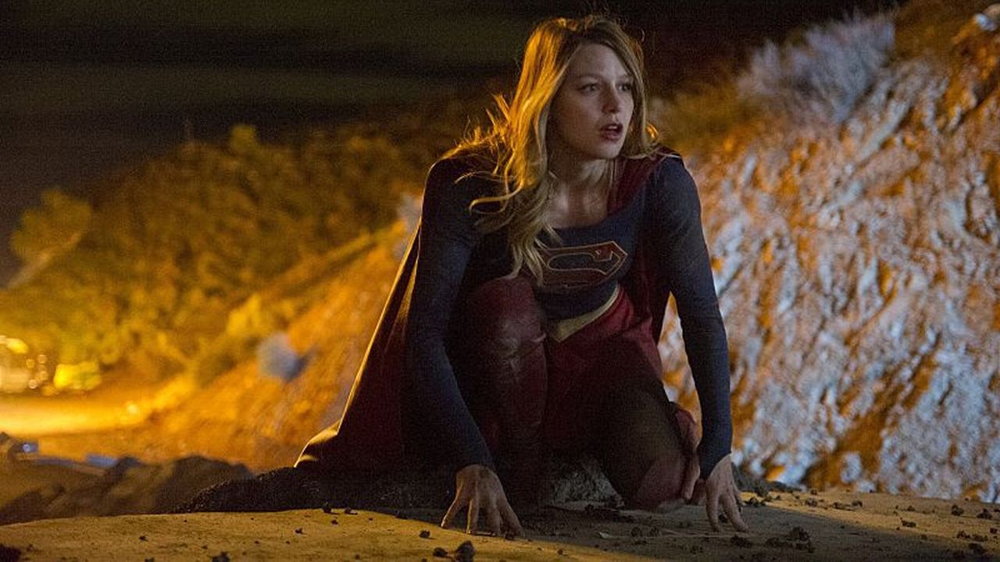

Supergirl S01|E01 Pilot
Though so often referenced in relation to her famous supercousin Kal-El, Kara Zor-El gets her time in the sun in CBS’ foray into the so-hot-right-now one hour network superhero drama, Supergirl, debuting October 26th. While it simultaneously represents both the best and worst of the genre’s stigmas, ultimately it’s Melissa Benoist utter likability, fun newsroom banter, and the show’s reverence – and sometimes subervison of -- classic Superman mythology that lets it shine.
The most appealing aspect of Supergirl’s pilot is the palpable sense of excitement and fun that Benoist brings to the role. She plays Kara as a woman that knows she has a greater destiny and is only just learning to overcome her obstacles and naysayers to embrace it with a smile on her face. From her first heroic act to her last, Benoist imbues Supergirl with an addictive sense of humor without losing her inspirational and powerful agency.
The show’s version of Supergirl has shades of Peter Parker, in that she can deal with the great power and responsibility but still have the wherewithal to have a blast doing it. Her take on Kara’s secret identity has definite shades of Christopher Reeves’ Clark Kent in all the best ways, giving Kara a goofy quality that makes her fun to watch yet adds a dose of tragedy knowing that she’s the most powerful person in the room at any given moment yet having to act like a total dope.
The pilot does a great job of establishing Kara as a figure that’s constantly fighting expectations. As Kara Danvers, she lives in the shadow of her cold, high strung boss Cat Grant (Calista Flockhart) and has to work to get the respect she deserves as a person and employee. As Kara Zor-El/Supergirl, she lives in the shadow of her famous cousin -- the Man of Steel, Superman – and feels like she has to earn her place as a hero in her own right. What the show does fantastically is allow her to do just that, while not ignoring Superman’s impact and influence on Kara despite not really being a physical presence in the show. By the end of the pilot we’re given plenty of reason to root for Kara; not because she wears the familiar S-Shield on her chest, but because she’s an engaging character in an out of the cape.
Kara’s chemistry with Metropolis transplant James Olsen (Mehcad Brooks) is magnetic and serves as an interesting personal connection to her cousin in his absence. Her relationship with her loving-but-disapproving sister Alex (Chyler Leigh) is a surprising but welcome addition the dynamic, providing Kara an outlet to talk about the struggles of both her day job and her superhero life. Supergirl manages to avoid delving into the overdone superhero struggle of being an isolated loner; a hero that’s unable to share their deepest secrets with loved ones. In fact, if there’s any fault of the pilot in the secret identity department, it’s that too many people are in on the secret. Still, it’s refreshing to know that the show won’t be diving too deep into the well-worn “you can’t know my secret because I have to protect you” territory.

The pilot is certainly not perfect (but what pilot is?) but Supergirl is a fun – if typical – superhero drama with an absolutely magnetic lead actress. Melissa Benoist fully inhabits Kara and her alter-ego, adding a sense of fun and optimism that one would expect from a Superman-inspired world. Though it suffers from cheesy villains, a bland Winn Schott, and too-fast pacing, Supergirl’s pilot is an exciting start to a series that will hopefully grow into something amazing with time.
Next weeks episode preview: